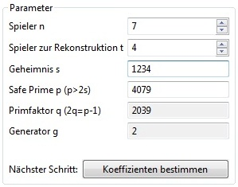

Der Verifiable Secret Sharing Algorithmus wurde 1987 von Paul Feldman entwickelt und basiert auf dem von Adi Shamir 1979 entwickelten Secret Sharing Verfahren Shamir's Secret Sharing. Mit diesem Algorithmus ist es möglich, ein Geheimnis auf mehrere Personen aufzuteilen, wobei eine gewisse Untermenge dieser Personen erforderlich ist, um das Geheimnis zu rekonstruieren. Im Gegensatz zum ursprünglichen Algorithmus von Shamir, kann beim Verifiable Secret Sharing jeder Spieler seinen Share auf Korrektheit überprüfen. Vor der Rekonstruktion können auch die Shares der anderen beteiligten Spieler verifiziert werden.
Im Folgenden wird die Funktionsweise des Verifiable Secret Sharing Plugins anhand einiger Screenshots und Erklärungen gezeigt.
Das Verifiable Secret Sharing Plugin lässt sich über das Menü Visualisierungen oder über die View Algorithmen im Reiter Visualisierungen starten und in seiner Ansicht maximieren.
Das Plugin gliedert sich in vier Bereiche: Header, Eingabemasken, Erklärungsboxen sowie den Reiter Rekonstrunktionsgraph. Im Header wird eine kurze Beschreibung des Plugins angezeigt.
Die Eingabemasken dienen zur Eingabe der Parameter durch den Benutzer und zur Anzeige der Ergebnisse der verschiedenen Berechnungen.
Am unteren Bildschirmrand gibt es noch einen Bereich Erklärungen, wo zusätzliche Informationen zum aktuellen Arbeitsschritt angezeigt werden.
Im Reiter Rekonstruktionsgraph werden nach erfolgter Rekonstruktion der Graph und das rekonstruierte Polynom angezeigt.
In der Eingabemaske Parameter werden die nötigen Parameter für den Ablauf des Algorithmus eingestellt. Man wählt die Anzahl der Personen n aus, an die die Shares verteilt werden und die Anzahl der Personen t, die für die Rekonstruktion des Geheimnisses nötig sind. Die Anzahl der Personen für die Rekonstruktion darf höchstens der Anzahl der gesamten Personen entsprechen und beide müssen mindestens 2 sein, da sonst die Idee des Secret Sharing ad absurdum geführt werden würde.
Nachdem als nächstes das Geheimnis s gewählt wurde, wird automatisch der Modul p berechnet, da dieser eine Safe Prime sein muss. Da das Finden von Safe Primes relativ aufwendig ist, wird empfohlen die vorgeschlagenen Werte zu verwenden. Es kann jedoch auch selbst ein Modul gewählt werden. Auch in diesem Fall muss der Modul wieder eine Safe Prime sein und mindestens doppelt so groß wie das Geheimnis s. Des Weiteren wird der größte Primfaktor q von (p-1) benötigt. Der Primfaktor berechnet sich automatisch aus der Safe Prime p wie folgt: q = (p-1)/2. Der letzte Parameter ist der Generator g, welcher automatisch berechnet wird. g ist ein Element des Körpers Z_p mit der multiplikativen Ordnung q. Aufgrund eines erhöhten Rechenaufwandes bei der Bestimmung der Ordnung des Generators - wenn der Generator g groß gewählt wird - kann dieser nicht verändert werden.

Sind alle Parameter korrekt gewählt, ist es möglich mit einem Klick auf Koeffizienten bestimmen zum nächsten Schritt fortzufahren.
In der Eingabemaske Koeffizienten werden die Koeffizienten für das Polynom festgelegt. Diese können entweder vom Plugin, mittels Klick auf den Button Generieren, generiert werden lassen oder wieder selbst gewählt werden. Die Koeffizienten müssen natürliche Zahlen sein und kleiner als der Modul q. Zusätzlich darf der letzte Koeffizient nicht 0 sein, da sonst der Grad des Polynmos verringert werden würde und weniger Spieler als t eine erfolgreiche Rekonstruktion durchführen könnten. Der Koeffizient a_0 ist das zuvor festgelegte Geheimnis s.

Weiters gibt es in diesem Schritt den Button Commit. Die Berechnung der Commitments ist notwendig, wenn man im weiteren Verlauf die verteilten Shares überprüfen möchte. Nach der Berechnung werden die Commitments in einer eigenen Eingabemaske angezeigt.

Die Berechnung der Commitments ist optional, da diese nur für die Überprüfung der Shares und nicht für die Rekonstruktion des Geheimnisses benötigt werden. Falls man auf die Überprüfung verzichten möchte, kann man diesen Schritt überspringen.
Um die Shares zu berechnen und zum nächsten Schritt zu gelangen, klickt man auf Shares berechnen.
Der letzte Schritt verteilt sich auf die beiden Eingabemasken Shares und Rekonstruktion. In der Shares-Eingabemaske werden die Zwischenergebnisse vor der Reduktion modulo q und die Shares modulo q angezeigt. Alle nachfolgenden Berechnungen werden mit den Shares modulo q durchgeführt. Das Zwischenergebnis vor der Reduktion modulo q wird nicht mehr benötigt. Es wird trotzdem angezeigt, damit der Benutzer nach der Rekonstruktion den Graphen des Polynoms auf seine Richtigkeit kontrollieren kann.
Über die Check-Buttons können die Shares überprüft werden. Hierzu ist es notwendig, dass zuvor die Commitments berechnet worden sind, da diese für die Berechnungen beim Check notwendig sind. Nach einer erfolgreichen Überprüfung eines Shares wird das jeweilige Feld grün eingefärbt. Liefert die Überprüfung kein positives Ergebnis, wird das Feld rot eingefärbt. Versuchsweise können die Shares verändert werden, um ein inkorrektes Checkergebnis zu erzeugen.

Die Rekonstruktion erfolgt über den Button Rekonstruieren. Zuvor müssen noch die für die Rekonstruktion gewünschten Shares ausgewählt werden. Damit die Rekonstruktion möglich ist, muss die Anzahl der gewählten Shares mindestens t sein. Werden zu wenig Shares ausgewählt, wird ein falsches Polynom und somit auch ein falsches Geheimnis rekonstruiert. Das Ergebnis der Rekonstruktion wird im Reiter Rekonstruktionsgraph angezeigt. Dies umfasst das rekonstruierte Polynom sowie eine graphische Darstellung davon.